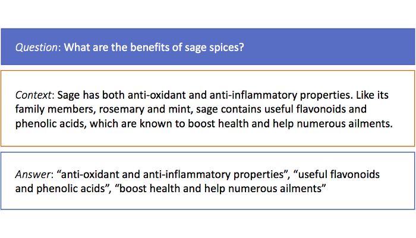
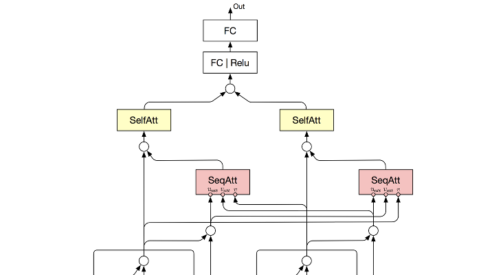
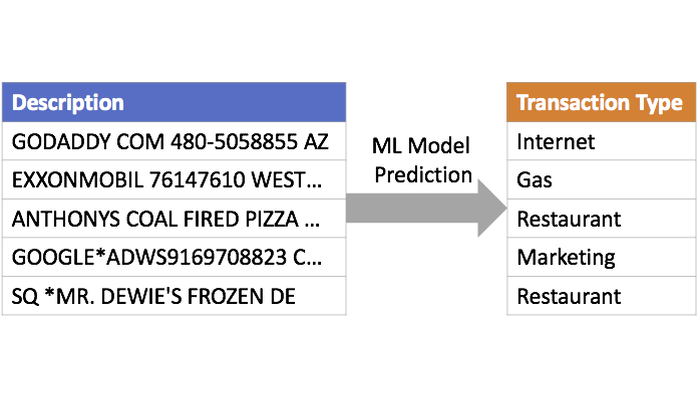
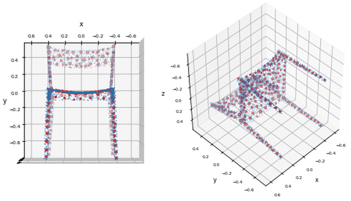
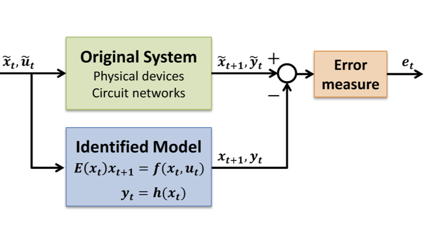
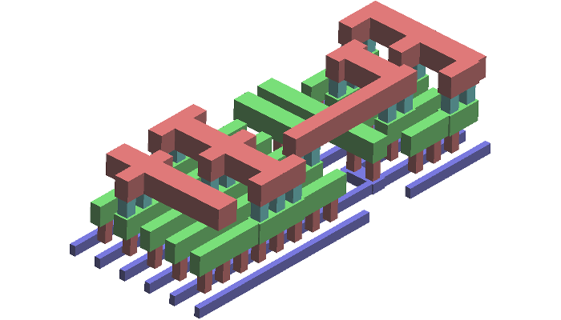

Multi-Span Question Answering
The state-of-the-art closed-domain question answering
problem like
SQuAD expects a single-span answer from the closed-domain context.
However, in a more natural setting, a question typically comes first.
Then the relevant document is retrieved by a search engine to pair up the question
as the context.
In such a case, the answer usually scatters all over the context as multiple phrases.
An example can be seen from the image above.
This is a step forward toward a semi-open-domain question answering system.
This project utilized BiLSTM with
Co-Attention and Self-Attention mechanisms, implemented in
PyTorch.

Deep Learning for Ranking
Document relevance ranking, recommendation, and potentially click-through rate
prediction can
be all accomplished through NLP deep learning.
The canonical neural network design is to start with a word- and/or character-level embedding,
followed by layers of RNN
and Attention mechanisms that fuse multiple input signals together
(typically query and document), and end with a metric of the ranking loss.
This approach is significant more accurate than traditional information retrieval methods,
such as TFIDF or BM25, at a cost of much higher computational complexity.
How to strive for a balance between these two types of methods is the key for a
practical design.

Text Classification for Machine-Generated Transaction Data
Machine-generated
transaction descriptions are ungrammatical with word order scrambled and
difficult to tokenize because of inconsistent spaces.
Examples can be seen above.
This messiness comes from the fact that they are jointly determined by
multiple parties: credit card companies, point-of-sale systems, and store owners.
Each part of the transaction pipeline prepends or appends the words without following
a particular standard or guideline.
In this case, RNN may be of little help but just computationally expensive.
A better trade-off can be achieved using a traditional NLP method, such as
bag-of-words featurization on letter n-grams, followed by classic multi-class classification methods.
Patent (pending).

GitHub Repo Recommender System
GitHub is great except for navigating yourself on the site.
Back in 2014 when this project was conducted, the GitHub repo recommendation
functionality left a lot to be desired (it is now improved very much compared to then).
In light of this, I designed and implemented a GitHub recommender system based on
README keyword similarities.
The relevant repos are precomputed and clustered by the affinity propagation method
to enable real-time retrieval upon users' request.
The overall recommender system is implemented in Python and was served
as a web application.
Slides.
GitHub.

Point Cloud Object Recognition
The point cloud image representation has been growing its popularity due to the recent
increases of LIDAR signal applications from the autonomous driving and robotics industry.
To recognize the objects from points directly (without projecting points onto pre-defined grids),
one recent breakthrough is the work
"PointNet,"
which relies on symmetric functions whose computation is independent of
data orders and all points can then be treated as an unordered set.
However, the original work of PointNet does not utilize the proximity information
between points and seems to have room for improvement.
I proposed an augmentation method "super points," a representation of point clusters,
to help the neural net recognize point proximity information.
This improves the prediction accuracy against the ModelNet40 benchmark.
Report.

Automated Modeling of Nonlinear Dynamical Systems
This project is to design a black-box learning algorithm for nonlinear
dynamical system modeling, with the aim to enable
hierarchical, bottom-up modeling strategy.
Prior to this work, the existing modeling methods for nonlinear dynamical systems
target only the end-to-end modeling scenario, which implies that
any small changes in one component of the system
requires a whole model retraining.
A more practical approach is to build a model of each component of the system
one at a time and then construct the whole system by composing component models.
However, composing models implicitly creates feedback loops and almost always
unstabilizes the overall system model.
I developed a convexified theoretical criterion such that the composed systems
are numerically stable and implemented a convex optimization program.
This method has been successfully applied to nonlinear circuits,
human arterial networks, and finance time-series stock price prediction.
Thesis.
GitHub.

CAPLET: Parallelized Capacitance Extraction Toolkit
CAPLET is an open-source capacitance extraction toolkit that computes field-solver
accurate solutions using our developed ultra parallel-efficient algorithm,
which is built on top of empirical instantiable basis functions
for the boundary element method.
Our freely released software covers the complete extraction flow from GDS2 layout
files to capacitance matrices.
This is, to the best of our knowledge, the first open-source extraction tool that
incorporates geometry algorithms, basis function generation, 3D layout visualization,
and parallelized field solver extraction altogether.
CAPLET provides both intuitive GUI and command line interfaces.
The underlying algorithm is specialized for VLSI interconnects in Manhattan
geometries inside a uniform dielectric material.
Website.
GitHub.